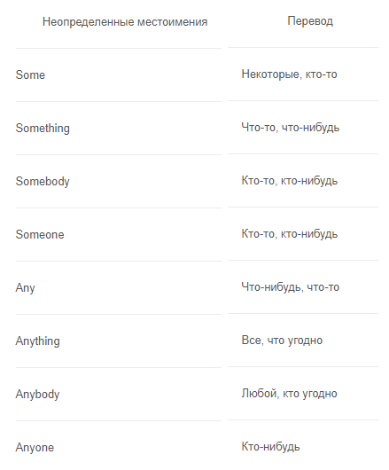

Неопределенные местоимения. Вы их наверняка встречали! Это слова somebody, something, somewhere, anyone, anybody, anything, anywhere, someone.
Важно знать! Местоимения в английском со склонениями -body и -one, ничем между собой не различаются.
Some и any часто употребляются, чтобы обозначить количество:
Any используют для отрицательных предложений или вопросов:
Местоимения с частицей some (somebody, something, someone) употребляются в предложениях, в которых один человек предлагает что-либо другому, или в ситуациях, где есть утверждения:
Anyone, anybody, anything используются в отрицаниях, вопросах и условных высказываниях:
По их названию несложно догадаться, что такие местоимения указывают на лицо, предмет, признаки или действия. Указательные местоимения также делятся на единственные и множественные.
В английском языке есть 4 наиболее распространенных местоимения в указательном склонении, которые очень похожи по звучанию и написанию. Это This, These, That, Those. Рассмотрим каждое из них отдельно.
Местоимения This и These употребляются в случаях, когда:
Мы указываем на то, что находится рядом. Например:
Тот, кто читает, скорее всего, просто показал бы пальцем на книгу, или повернул обложку другим углом, чтобы было видно название. Так или иначе, книга находилась рядом с ним. Поэтому в предложении по смыслу подходит местоимение this.
Это же правило распространяется и на форму множественного числа – these.
This и These мы также используем, когда говорим о будущем или настоящем. Например, указываем на неделю, месяц, день, год.
Местоимением this можно представиться в телефонном разговоре.
Местоимения that и those употребляются, когда речь идет о:
Предметах, которые от нас далеко.
Когда говорим о чем-то, что уже было названо, но имело место в прошлом.

Когда просим человека на том конце провода представиться.